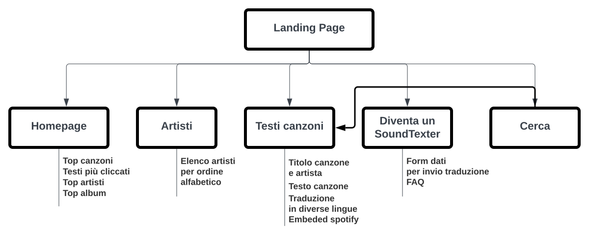

Obiettivi
Gli obiettivi di SoundText sono molteplici: fornire un'ampia collezione di
testi musiccali e traduzioni in diverse lingue, costruire una comunità in cui gli
utenti possono
inviare le proprie traduzioni e lasciare commenti e recensioni sulle traduzioni
presenti (funzione che potrà essere implementata e non ora presente),
offrire un'esperienza utente intuitiva e piacevole per via anche di una grafica
accattivante.
Altri obiettivi sono sicuramente il puntare alla qualità delle traduzioni (ciò
potrebbe comportare la verifica e l'approvazione
delle traduzioni inviate dagli utenti, al fine di mantenere gli standard elevati);
ma anche l'integrazione con servizi musicali come Spotify, per fornire un'esperienza
integrata e ancor più coinvolgente.
Target
Il target di SoundText comprende gli appassionati di musica di tutte le età e
soprattutto provenienti da
diverse parti del mondo.
Il sito mira a soddisfare le esigenze di coloro che
desiderano comprendere i testi musicali e le loro traduzioni.
Pertanto SoundText si rivolge a un pubblico vasto e diversificato, che comprende sia
appassionati di musica di lunga data che nuovi ascoltatori propensi a
scoprire nuovi artisti e generi musicali.
Competitors
I siti web che offrono esperienze d'utilizzo analoghe a Soundtext sono molteplici
considerando il pubblico cui sono rivolti.
Alcuni possibili competitor potrebbero includere Genius, AZLyrics, Letras.mus.br.
Genius è un sito web che offre testi, annotazioni, spiegazioni e traduzioni ed è
noto per la comunità di utenti che contribuiscono
con le annotazioni e interpretazioni.
AZLyrics fornisce una raccolta di testi musicali in diverse lingue cui gli utenti
possono far riferimento.
Letras.mus.br è un sito brasiliano che offre testi in portoghese oltre ad altre
lingue.
La presenza di competitor non significa necessariamente che questi offrano le stesse
caratteristiche e funzionalità di SoundText.
La sua immediata differenza distintiva è la sua natura collaborativa, la sua
interattività, la sua grafica funzionale e l'avvio di una possibile comunità di
amanti di musica.
2. Struttura e layout
La struttura di SoundText prevede una landing page dalla quale gli utenti vengono
reindirizzati alla home page.
La homepage presenta il logo del sito e una barra di navigazione che include le seguenti
sezioni: Artisti, Canzoni, Diventa un SoundTexter e una barra di ricerca.
In basso è presente il footer con gli indirizzamenti alle pagine social Instagram e
Facebook.
Nella sezione "Artisti" gli artisti sono suddivisi in un elenco alfabetico, presentati
in una tabella a 2 colonne.
Alla fine della tabella è presente una numerazione per la navigazione tramite
paginazione.
Nella sezione "Canzoni" per ogni singolo o album dell'artista viene visualizzata
un'immagine, il nome dell'artista e il testo originale della canzone.
È presente un pulsante che consente di selezionare la lingua e ottenere una traduzione
immediata.
Inoltre, viene incorporato un lettore di Spotify relativo alla canzone selezionata.
Nella sezione "Diventa un SoundTexter" è presente un modulo in cui gli utenti possono
compilare i dati per inviare una traduzione di una canzone.
È presente anche un editor di testo che consente di formattare il testo con
sottolineature, testi in grassetto o corsivo, e così via.
Architettura ad albero

Wireframe
Look and feel
Fonts
I font impiegati in SoundText sono due: Poppins e Mitr.
Entrambi caratterizzati da un design semplice e pulito contribuiscono a creare
un'esperienza di
lettura agevole e piacevole per gli utenti del sito. Essi facilitano la lettura e la
fruizione dei testi e delle traduzioni musicali.
Il font Poppins è ampiamente apprezzato per la sua versatilità e leggibilità.
È un carattere sans-serif moderno e geometrico, con linee pulite e angoli
arrotondati.
La sua struttura bilanciata e leggera lo rende ideale per essere utilizzato in
titoli, sottotitoli e altri elementi di enfasi nel design.
Il font Mitr è anch'esso un carattere sans-serif, noto per la sua leggibilità e
chiarezza.
È caratterizzato da forme semplici e curve morbide, che lo rendono adatto per il
corpo del testo e il contenuto principale del sito.
Mitr può fornire una buona leggibilità anche a dimensioni di testo più piccole,
garantendo una visualizzazione confortevole per gli utenti.
Colori
La grafica di SoundText è caratterizzata da un design pulito e dai colori vibranti.
La nav bar trasparente consente di mettere in risalto lo sfondo animato, che
presenta una varietà di colori sfumati e gradienti.
Ad ogni refresh della pagina, lo sfondo cambia colore e sfumatura, creando un
effetto visivo dinamico e coinvolgente.
I colori predominanti nello sfondo sono il giallo, l'arancione, il rosa, il rosso e
il viola, nelle loro diverse sfumature.
Questi colori vivaci possono creare un'atmosfera energica e accattivante,
contribuendo a trasmettere la passione e l'emozione della musica.
Per garantire una buona leggibilità, i testi sono mantenuti in colore nero su uno
sfondo sfumato.
Questo contrasto tra i colori vivaci dello sfondo e il testo nero crea un effetto
visivo nitido e favorisce una chiara comprensione del contenuto.
L'uso di una grafica pulita e dei colori vibranti contribuisce a creare
un'esperienza visiva coinvolgente su SoundText,
che si adatta alla natura dinamica e multilingue del sito,
senza sacrificare la leggibilità e la facilità d'uso per gli utenti.
3. Linguaggi e strumenti
testo testo testo testo testo testo testo testo testotesto testo testotesto testo
testo testo testo
testotesto testo testo testo testo testo
Communication Strategy
1. Background
testo testo testo testo testo testo testo testo testotesto testo testotesto testo
testo testo testo
testotesto testo testo testo testo testo
2. Obiettivi comunicativi
testo testo testo testo testo testo testo testo testotesto testo testotesto testo
testo testo testo
testotesto testo testo testo testo testo
3. Target audience e messaggio
testo testo testo testo testo testo testo testo testotesto testo testotesto testo
testo testo testo
testotesto testo testo testo testo testo
4. Promozione
testo testo testo testo testo testo testo testo testotesto testo testotesto testo
testo testo testo
testotesto testo testo testo testo testo
5. Valutazione dei risultati
testo testo testo testo testo testo testo testo testotesto testo testotesto testo
testo testo testo
testotesto testo testo testo testo testo
Brochure
testo testo testo testo testo testo testo testo testotesto testo testotesto testo
testo testo testo
testotesto testo testo testo testo testo
testo testo testo testo testo testo testo testo testotesto testo testotesto testo
testo testo testo
testotesto testo testo testo testo testo
Google Analytics
testo testo testo testo testo testo testo testo testotesto testo testotesto testo
testo testo testo
testotesto testo testo testo testo testo